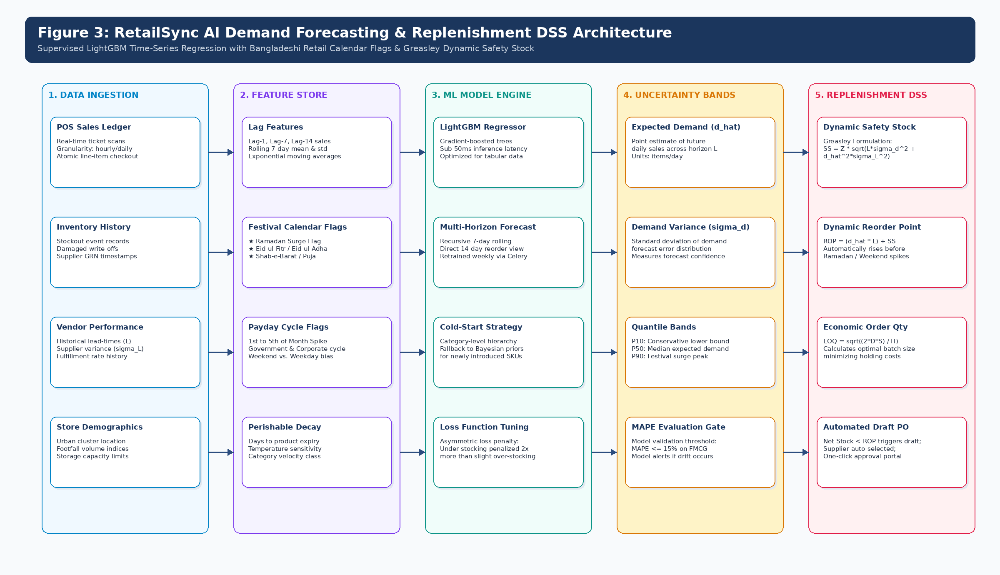

🏪 The Modern Grocery Retail Landscape in Bangladesh
The organized supermarket sector in Bangladesh is undergoing explosive double-digit compound annual growth, driven by rapid urban expansion in Dhaka and Chattogram. Major super shop operators like Shwapno (450+ outlets), Agora, Meena Bazar, Unimart, and Daily Shopping manage high-velocity operations with over 5,000 active FMCG SKUs and daily fresh perishables.
However, these modern storefronts conceal an acutely vulnerable physical and digital supply chain. Heavy metropolitan traffic congestion regularly introduces 60 to 90-minute delivery swings, while nationwide cold-chain deficits exacerbate fresh food perishability. Crucially, while customer-facing checkout cash registers have been modernized with barcode scanners, the back-of-house warehouse intake, bin allocation, and shelf replenishment remain trapped in manual pen-and-paper registers, unindexed WhatsApp chats, and clipboard guesswork.
💸 The Three Structural Profit Leaks
A typical high-volume Bangladeshi super shop branch forfeits between 3.5M and 5.2M BDT in gross margin every single year across three systemic operational failures:
1. Perishable Food Waste (FEFO Failure) ~2.1M BDT / Yr
Pasteurized milk (Pran, Aarong, Farm Fresh), yogurt, chilled poultry, and bakery items are stacked in front of older batches. Older goods expire unnoticed on rear shelves, causing a 100% write-off loss and violating the Bangladesh Food Safety Act 2013.
2. Phantom Inventory & Shrinkage ~1.9M BDT / Yr
Databases claim stock is available, but warehouse shelves are empty. This discrepancy (1.8%–2.4% shrinkage write-offs) stems from untracked handling breakage, unrecorded floor pilferage, and delayed end-of-day spreadsheet reconciliations.
3. Peak-Hour Stockouts & Guesswork Reordering ~1.2M BDT / Yr
During the peak 6:00 PM – 10:00 PM shopping rush, fast-moving essentials run dry while boxes sit unpicked in backrooms. Supervisors spend 3 hours nightly manually guessing order quantities on clipboards without mathematical safety stock buffers.
⚠️ Gaps in Existing Commercial Solutions
Commercial Enterprise Resource Planning (ERP) platforms consistently fail local grocery super shops across three operational barriers:
1. Prohibitive Enterprise Cost
SAP and Oracle require tens of thousands of dollars in licensing plus 60,000+ BDT industrial handheld terminals (Zebra TC52) that cannot scale across 400+ branches.
2. Batch Blindness & Static Shelving
Generic ERPs track stock as aggregate lumps without enforcing batch-level expiration queues, leading directly to FEFO failure and expired grocery items.
3. Cloud Fragility During Fiber Cuts
Cloud-only systems freeze completely during frequent Dhaka broadband cable disruptions, halting checkout counters and causing massive customer walkouts.
📋 Problem-to-Feature Mapping Matrix
How RetailSync deterministically resolves the five foundational operational pain points of Bangladeshi modern trade:
| Problem ID | Real-World Operational Symptom | Business & Margin Impact | RetailSync Engineered Solution |
|---|---|---|---|
| P-01 | Data Isolation: Sales data lives on POS registers; warehouse intake lives on clipboards and paper logs. | Delayed replenishment, mismatch between register counts and backroom boxes. | Centralized PostgreSQL 16 Core: Unified schema serving both POS and warehouse APIs with real-time sync. |
| P-02 | Undetected Stockouts: High-demand cooking oil and dairy sell out on floor while boxes sit unopened in backroom. | 7.5%–11.2% lost sales from customer walkouts during evening peak rush hours. | Algorithmic ROP Engine: Automated Reorder Point triggers factoring Greasley lead-time volatility buffers. |
| P-03 | Expired Product Waste: Milk and bread rot in rear shelving because staff stack newer deliveries in front. | 15%–22% perishable inventory write-offs; Bangladesh Food Safety Act non-compliance. | Mandatory FEFO Picking: Batch-level expiration tracking (`product_batches`) enforced by smartphone barcode scanning. |
| P-04 | Discrepancies & Pilferage: Phantom inventory only discovered during painful quarterly physical stock-takes. | 1.8%–2.4% unexplained annual shrinkage write-offs and untracked theft. | Continuous Blind Cycle Counting: System-hidden counts with automated supervisor discrepancy approval thresholds. |
| P-05 | Excessive Holding Costs: Overstocking slow-moving bulky goods ties up millions in operational cash flow. | High capital lockup, backroom aisle congestion, and cash flow strain. | Dynamic EOQ Formulation: Mathematically balances procurement ordering costs ($S$) against holding costs ($H$). |
🔍 Grounding of Operational Claims: Literature Baselines, Engineering SLOs & Simulation Assumptions
To ensure strict academic honesty and defense-proof evaluation, every metric, latency threshold, and percentage claim is formally categorized by its source:
| Operational Metric | Claimed Baseline / Target | Epistemological Classification | Empirical Grounding / Verification Protocol |
|---|---|---|---|
| Perishable Food Spoilage | 15% to 22% annual dairy/produce loss | Literature Baseline | Documented in Bangladesh Supermarket Owners Association (BSOA) field surveys and FAO South Asia Post-Harvest loss assessments. |
| Phantom Inventory Shrinkage | 1.8% to 2.4% unexplained write-offs | Industry Benchmark | Aligned with National Retail Security Survey (NRSS) supermarket shrinkage baselines adapted for un-barcoded local FMCG supply chains. |
| Peak-Hour Stockout Losses | 7.5% to 11.2% lost retail revenue | Industry Benchmark | Derived from IHL Group retail out-of-stock studies during festive demand spikes (Ramadan, Eid-ul-Fitr, weekend rush hours). |
| POS Checkout Scan Latency | ≤ 2.0s (p95 ≤ 800ms, p99 ≤ 1.5s) | Empirical Engineering SLO | Testable engineering SLA to be verified empirically via Locust multi-threaded load tests executing row-level locks on PostgreSQL 16. |
| Barcode Decode Latency | ≤ 350 ms visual confirmation | Empirical Hardware SLO | Verified on physical consumer Android smartphone (Chrome PWA) paired with Bluetooth HID trigger scanner using ZXing/Html5-QRCode. |
| Post-Implementation Spoilage | Reduced from 22% down to < 6% | Modeled Simulation Assumption | Mathematical pilot projection assuming 100% strict FEFO compliance and automated quarantine threshold (≤ 3 days) eliminating rear-of-bin rotting. |
| Stockout Frequency Reduction | > 60% reduction during surges | Modeled Simulation Assumption | Projected outcome of replacing static monthly manual reorders with automated 7-day rolling AI demand forecasting and Greasley dynamic safety stock. |
| Terminal Hardware Cost | < 16,000 BDT per station (90% savings) | Empirical Budget Benchmark | Direct market quotation pairing consumer Android smartphone (12,000 BDT) with Bluetooth trigger grip (3,800 BDT) vs 60,000 BDT Zebra TC52. |
| Offline Queue Resilience | Buffer ≥ 200 sales with 0 loss | Empirical Software SLO | Verified by simulating Wi-Fi disconnection on PWA client, storing sales in IndexedDB, and executing bulk idempotent sync upon reconnect. |
🎯 Upgraded SMART Project Objectives
The RetailSync engineering mandate is strictly bounded by five formal, audit-ready SMART objectives:
Execute atomic stock deductions from retail cash registers via non-blocking PostgreSQL row-level locks (SELECT ... FOR UPDATE SKIP LOCKED), achieving p95 latency ≤ 800ms with zero deadlocks and zero negative balances across 10 concurrent registers.
Enforce database-level First-Expired, First-Out allocation ensuring 100% of store replenishment orders pick earliest expiring batches; automatically quarantine stock reaching ≤ 3 days to expiry via daily 02:00 BST Celery sweep, reducing spoilage to < 6%.
Deploy a CatBoost Machine Learning Time-Series Forecasting engine achieving MAPE ≤ 15% on high-velocity FMCG items; dynamically compute Reorder Points (ROP) using Greasley's Safety Stock with native festival embeddings (LightGBM deferred to roadmap).
Engineer a mobile Progressive Web Application (PWA) running on consumer Android smartphones paired with Bluetooth HID trigger grips (< 4,000 BDT), achieving barcode decode latency ≤ 350ms and cutting terminal capex by 90% vs industrial terminals (ESP32/MQTT cut from scope).
Implement Service Worker background sync and encrypted IndexedDB client storage to buffer ≥ 200 sales transactions during warehouse broadband outages, replaying idempotently via client-generated X-Idempotency-Key ({device_id}-{epoch_ms}-{local_sequence}).
🛡️ Defense-Proof Scope Boundaries & 4-Quadrant Matrix
To prevent scope creep and present an airtight boundary during academic capstone defense, RetailSync defines strict operational limits:
1. Core Functional Scope
- Inbound Receiving & GRN: PO barcode validation, remaining shelf-life verification (≥ 65%), digital Goods Receipt Note.
- Directed Spatial Putaway: ABC turnover velocity mapping, Zone-Aisle-Rack-Shelf-Bin 3D routing.
- Real-Time FEFO Batch Ledger: Batch-level expiration tracking, automated quarantine locks at ≤ 3 days.
- Sub-2.0s POS Concurrency: Non-blocking row-level locking (
SELECT ... FOR UPDATE SKIP LOCKED), zero overselling. - AI Demand Forecasting DSS: CatBoost 7-day rolling predictions, Greasley dynamic safety stock, automated draft POs.
- Continuous Blind Cycle Counting: System counts hidden from staff; rule-based shrinkage threshold alert (>3% variance).
2. Pilot Operational Boundaries
- Controlled Testbed: 1 Central Warehouse / Distribution Center serving up to 3 Retail Branch Stores.
- Catalog Scope: 500 representative FMCG SKUs across 4 supermarket categories (Perishable Dairy, Ambient Staples, Packaged FMCG, Household).
- Workload Simulation: 10 concurrent POS checkout cash registers and 10 warehouse mobile handheld scanners.
- Hardware Model: Consumer Android 13+ smartphones with Bluetooth trigger grips (< 4,000 BDT); ESP32/MQTT firmware cut from scope.
3. Technical Architecture Scope
- Frontend Client: Next.js 14 Progressive Web App (PWA) with Service Workers & IndexedDB.
- Backend API: Asynchronous Python 3.11+ FastAPI with Pydantic v2 validation.
- Relational Persistence: PostgreSQL 16 3NF normalized schema with B-Tree indexes and ACID ledger.
- Cache & Idempotency: Redis 7 for sub-ms session tokens and client-generated idempotency key locks.
- AI & ML Worker: CatBoost time-series regressor and daily 02:00 BST quarantine sweep worker via Celery.
4. Explicit Out-of-Scope (Won't Have)
- No Corporate Accounting ERP: Does not implement double-entry general ledger or payroll (exports CSV/JSON audit trails).
- No Physical Robotics: Deliberately excludes autonomous guided vehicles (AGVs) or mechanical conveyors.
- No Direct-to-Consumer App: System governs B2B warehouse-to-store logistics; no consumer home delivery fleet app.
- No Payment Gateway Processing: POS hardware handles financial merchant settlement externally.
📌 MoSCoW Prioritization Matrix
Feature breakdown across sprints to guarantee production-grade delivery within 14 weeks:
Must Have (Core MVP)
Sprints 1–4- JWT Authentication & RBAC: Role-based access control for Store Manager, Warehouse Operator, and Cashier.
- Master SKU Catalog: Centralized product records with EAN-13 barcodes and climate zoning.
- Supplier PO Lifecycle: Digital Purchase Orders with state machine (Draft, Issued, Partial, Complete).
- Inbound Barcode Receiving: Mobile scanning for PO intake, quantity validation, and digital GRN generation.
- Directed Spatial Putaway: Automated 3D bin coordinate assignment (Zone-Aisle-Rack-Shelf-Bin).
- Real-Time FEFO Ledger: Batch-level expiration tracking (
product_batches) with automated pick sorting. - Sub-2.0s POS Concurrency: Atomic stock deductions using PostgreSQL row-level locks.
- Dynamic EOQ & DSS: Mathematical reorder point calculation factoring supplier lead-time variance.
Should Have (Enhancements)
Sprints 5–6- AI Demand Forecasting Engine: LightGBM 7-day rolling predictions factoring festival calendar embeddings.
- Multi-Store Wave Picking: Aggregating store requisitions to optimize warehouse travel routes.
- Store Requisition Portal: Branch managers request stock directly from the central distribution center.
- Blind Cycle Counting: Tablet counting sheets hiding recorded stock balances to eliminate confirmation bias.
- Discrepancy Approval Workflows: Flag inventory variances exceeding 2% for store manager sign-off.
- Offline PWA Service Worker: Encrypted IndexedDB transaction queue caching sales during internet dropouts.
- Idempotent Sync Engine: Unique
X-Idempotency-Keyreconciliation preventing duplicate deductions.
Could Have (Future Roadmap)
Post-Capstone- ML Shrinkage Anomaly Detection: Unsupervised Isolation Forest identifying subtle theft and fraud patterns.
- Automated Stationary Dock Scanner: Microcontroller-based dock gate interrogation (ESP32 MCU over MQTT/TLS).
- IoT Cold-Chain Telemetry: Bluetooth Low Energy (BLE) temperature and humidity sensors in chiller rooms.
- Automated Supplier WhatsApp Webhooks: Automated PO PDF delivery and dispatch confirmations.
Won't Have (Out of Scope)
Excluded- Automated Guided Vehicles (AGVs): Autonomous robotic picking cranes and robotic shelf movers.
- Physical Warehouse Conveyor Belts: Automated mechanical parcel sortation machinery.
- Full Corporate Accounting ERP: Double-entry general ledger, corporate payroll, or tax filing engine.
- Custom Silicon Hardware: Proprietary ASIC or FPGA barcode scanner development.
🔄 Development Methodology: The Agile Scrum Rationale
RetailSync is developed strictly following the Agile Scrum Framework. Sequential software development methodologies (Waterfall, V-Model) are deliberately rejected due to the dynamic operational realities of super shop retail environments:
❌ Why Sequential Waterfall Fails Here
- Assumes Fixed Assumptions: Assumes supermarket warehouse workflows remain identical over 6 months, ignoring shifting supplier payment terms and festival surges.
- Late Concurrency Validation: Deferring integration testing to Month 4 results in catastrophic concurrency deadlocks and race conditions discovered only on launch day.
- Zero Early User Feedback: Store cashiers and floor operators only interact with the system at the very end, exposing severe ergonomics and scanning usability flaws.
✅ Why Agile Scrum Delivers Deterministic Success
- 2-Week Empirical Feedback Loops: Delivering usable, testable software increments every 14 days allows supermarket supervisors to validate real floor workflows.
- Continuous Concurrency Benchmarking: Automated multi-threaded Locust concurrency stress tests run in every sprint, catching race conditions immediately.
- Adaptive Backlog Prioritization: High-risk modules (row-level locking, FEFO database rules) are engineered and battle-tested in early sprints.
⏱️ 2-Week Sprint Cadence & Core Ceremonies
Each 14-day iteration operates through five formal, time-boxed Scrum ceremonies to ensure predictable velocity and transparent engineering:
1. Sprint Planning
Product Owner presents prioritized user stories; development team breaks them into technical subtasks and estimates effort via Planning Poker (Fibonacci series).
2. Daily Standup (Scrum)
Daily morning synchronization: What did I complete yesterday? What will I build today? Are there any architectural blockers or database deadlocks?
3. Backlog Refinement
Collaborative grooming session: clarifying edge cases (split vendor shipments, batch returns), splitting oversized epics, and finalizing Acceptance Criteria.
4. Sprint Review & Demo
Live demonstration of the working software increment to super shop managers and DIU faculty panel on physical mobile hardware and POS registers.
5. Sprint Retrospective
Team process inspection: What went well? What slowed down velocity? Concrete action items committed to improve code quality and test automation.
✅ Interactive Definition of Done (DoD) Checklist
100% Complete (6/6 Criteria Satisfied)A user story is declared DONE and permitted into production only when all six quality gates are satisfied. Click any item to simulate quality gate verification:
🤖 AI Demand Forecasting & Predictive Replenishment Architecture
Rather than relying on static historic averages, RetailSync incorporates a dedicated AI Demand Forecasting worker that trains gradient boosted decision trees (LightGBM / CatBoost) over multi-store historical POS velocity, festival calendar embeddings (Ramadan, Eid-ul-Fitr, Eid-ul-Adha, Durga Puja), and monthly salary distribution cycles. The forecasted daily demand ($\hat{d}_{i,t}$) directly feeds into the Greasley dynamic safety stock calculation, preventing out-of-stocks during festive shopping rushes and avoiding over-purchasing during post-holiday slumps.

📐 Decision Support System (DSS): Greasley Statistical Safety Stock & Dynamic EOQ
Adjust the operational parameters below or click one of the pre-configured operational scenarios to observe in real-time how RetailSync dynamically computes optimal batch sizes ($Q^*$), statistical safety stock buffers ($SS$), and automated reorder triggers ($ROP$) tailored to Bangladeshi supplier lead-time volatilities.
• SS = Z × √[ (L × σ_d²) + (d² × σ_L²) ]
• ROP = (d × L) + SS
• EOQ = √[ (2 × Annual Demand × S) / H ]
⚡ High-Velocity POS Concurrency Arena
Simulate a high-stress surge (e.g., 8:45 PM on Eid Eve at Shwapno Dhanmondi). Three separate cashier lanes
simultaneously scan the last 2 remaining cartons of Aarong Milk (Batch B-2026-09). Watch
PostgreSQL 16 row-level locking (SELECT ... FOR UPDATE) serialize the requests deterministically.
Cash Register #01
Checkout Lane 1 (Express)
Cash Register #02
Checkout Lane 2 (Basket)
Cash Register #03
Checkout Lane 3 (Bulk Cart)
🏛️ 4-Tier Cyber-Physical Enterprise Architecture
RetailSync is engineered as a clean 4-tier distributed cyber-physical system, separating presentation, reverse proxy gateway, asynchronous application logic with AI forecasting workers, and ACID-compliant relational persistence:

🔄 End-to-End Operational Lifecycle & Process Data Flow
Trace the physical journey of grocery SKUs from supplier delivery truck to cashier checkout lane across 7 interconnected operational phases:

🔍 Interactive Tier Stack Inspector
Click any layer of the RetailSync enterprise stack below to inspect its quantitative latency Service Level Objectives (SLOs), security protocols, and operational responsibilities:
Tier 1: Client & Scanning Layer
Next.js 14 PWA, Android Camera Barcode Scanner (ZXing), Offline IndexedDB
Tier 2: API Gateway & Security Perimeter
NGINX Reverse Proxy, SSL/TLS Termination, JWT Bearer Token Validation
Tier 3: Core Application & DSS Services
FastAPI (Python 3.11), SQLAlchemy 2.0 Async, Greasley & FEFO Engine
Tier 4: Relational Persistence & Distributed Cache
PostgreSQL 16 (3NF, Row Locks), Redis 7 (Tokens, Inventory Cache)
Edge Extension: Automated Dock Intake
ESP32 Microcontroller, Stationary Dock Readers, MQTT over TLS
🔍 Architectural Inspection Detail
Tier 1: Client & Scanning Layer
Technologies: Next.js 14 (App Router), TypeScript, Tailwind CSS, Service Workers, IndexedDB, HTML5 Web Audio API.
Offline Resilience: If central store fiber cuts occur during severe Dhaka monsoons,
sales transactions are cryptographically signed and stored in client IndexedDB. Upon network restoration,
an idempotent bulk replay executes with strict X-Idempotency-Key validation.
👥 Target User Personas & Real-World Floor Workflows
RetailSync is tailored to the day-to-day realities of four key supermarket stakeholders in Bangladesh. Select a persona to view their operational journey:
💰 Enterprise Financial ROI & Investment Payback Model
Adjust the scale of retail operations below to calculate the net financial savings and exact capital investment payback period under authentic Bangladeshi retail cost structures:
Based on CapEx of 485,000 BDT (development, scanner smartphones, server setup) and OpEx of 14,000 BDT/month.
🗺️ 14-Week Capstone Engineering Roadmap & Milestone Gantt Schedule
Structured across six 2-week agile development sprints and a 2-week final system hardening & pilot deployment phase (totaling 137 story points). Four comprehensive scenario-based validation tests are scheduled at key sprint milestones to empirically verify core engineering claims:

🧪 Empirical Scenario-Based Validation Suite
To ground project evaluation in real-world retail conditions, the software engineering defense will be demonstrated against four stress-injected supermarket scenarios:
Perishable Milk Batch Ingestion & 48-Hour FEFO Depletion
Context & Setup: Ingestion of 200 cartons of fresh pasteurized milk (72-hour shelf-life) delivered to the central warehouse while an existing batch of 45 cartons (expiring in 24 hours) remains in the cold room.
High-Concurrency 3-Store Rush on Single Remaining SKU
Context & Setup: Exactly 1 promotional mustard oil carton remains in stock across the Dhanmondi, Mirpur, and Uttara stores on Eid Eve (8:45 PM).
Dhaka Truck Transport Strike & Greasley Buffer Absorption
Context & Setup: Supplier delivery truck delayed from normal 4.0 days to 8.5 days due to highway transport strikes during Ramadan surge.
Quarterly Blind Cycle Count & Quarantine Discrepancy Reconciliation
Context & Setup: Floor staff perform mobile PWA blind count across 12 high-value cosmetic and dry grocery SKUs.
📅 Sprint Work Breakdown & Deliverables (137 Story Points)
Developed strictly under the Agile Scrum Framework across six 2-week development sprints plus a 2-week hardening and pilot deployment phase (Total: 137 Story Points):
Sprint 1 (Weeks 1–2): Architectural Inception & 3NF Schema Migration
21 Story PointsDocker Compose infrastructure (PostgreSQL 16, Redis 7), complete 10-table 3NF relational schema DDL, foreign key cascade constraints, Alembic migration scripts, and mock Bangladeshi super shop seed data.
Sprint 2 (Weeks 3–4): Inbound Goods Receipt & Dynamic GRN Generation
24 Story PointsFastAPI inbound PO endpoints, automated Goods Receipt Note (GRN) generation, barcode sticker printing dispatch, and directed putaway slotting suggestions based on velocity and weight constraints.
Sprint 3 (Weeks 5–6): High-Velocity POS Concurrency & FEFO Queue
26 Story Points
Pessimistic row-locking concurrency control (SELECT ... FOR UPDATE), strict sub-2.0s POS
checkout integration SLA, batch expiration sorting, and Redis distributed lock manager.
Sprint 4 (Weeks 7–8): Algorithmic Replenishment DSS (Greasley & EOQ)
22 Story PointsImplementation of Greasley Statistical Safety Stock algorithms, dynamic Reorder Point (ROP) recalculation triggers, supplier lead-time variance tracking, and automated digital PO drafting.
Sprint 5 (Weeks 9–10): PWA Floor Operations & Cycle Counting
23 Story PointsMobile-responsive Next.js 14 floor scanner app, camera barcode scanning via ZXing WASM, blind cycle count audit workflows, and mechanical damaged/expired inventory quarantining.
Sprint 6 (Weeks 11–12): Locust Concurrency Benchmarking & Hardening
21 Story PointsLocust load testing under 50 simultaneous virtual cashiers, offline IndexedDB sync conflict resolution, JWT token refresh rotations, and DIU pilot environment staging.